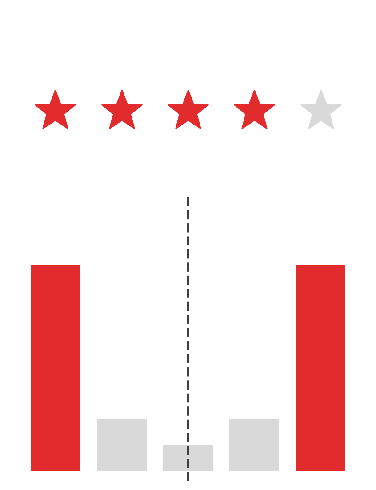
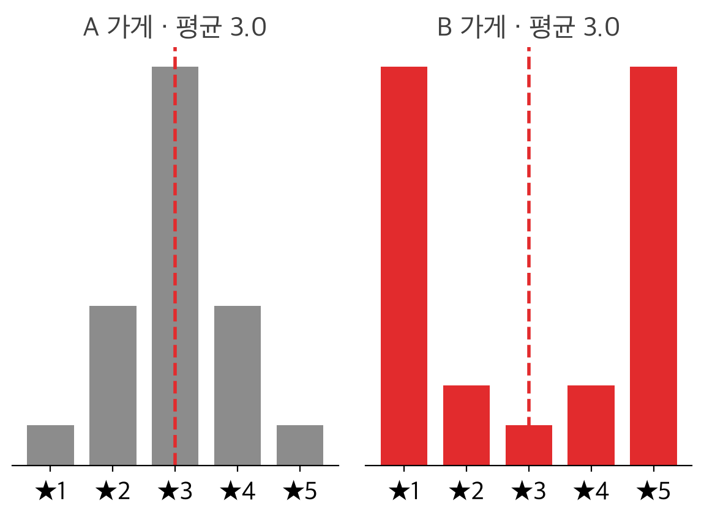
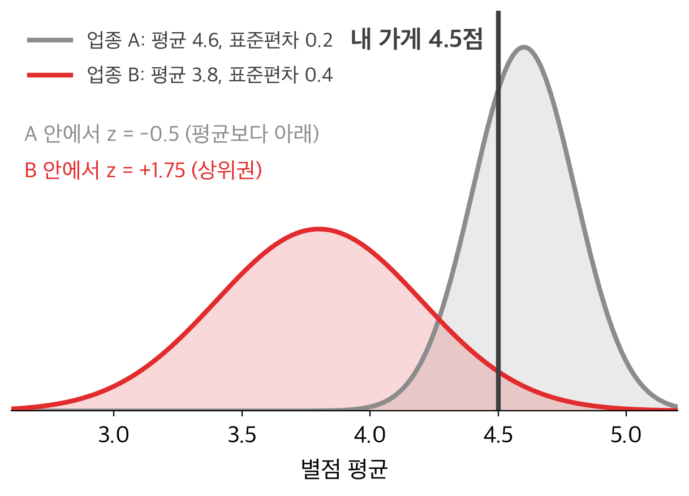

09
데이톨로지 — 데이터로 읽는 인간과 사회
주교재: 김성태, 『데이톨로지』, 이른비, 2022 · 강사 : ○○○

CONTENTS

목표 1
별점의 역사와 경제적·사회적 영향 설명
목표 2
원점수·표본 대표성·분포·아웃라이어로 별점의 착시 진단
오늘의 질문
A 식당 ★4.2 (리뷰 1,200개)
B 식당 ★4.6 (리뷰 9개)
어디로 가겠는가?
[비유] 별 다섯 개 트로피
사진: rawpixel / CC0
여행 안내서의 별 → 매출을 움직이는 별
별점이 움직이는 것: 매출과 생계
[비유] 확성기
사진: garryknight / CC BY 2.0
표본 대표성(representativeness): 별점 참여자 ≠ 전체 손님
[비유] U자 계곡
사진: theslowlane / CC BY 2.0
분포(distribution): 정상분포 vs U자형 분포
원점수(raw score) vs 표준점수(standard score)

데이톨로지 진단: 별점의 4가지 함정
01
4.5점이 업종 안에서 높은지 모름
02
극단의 손님만 남기는 별점
03
같은 평균, 정상형 vs U자형
04
리커트 5점 척도, 극단값 하나의 큰 영향
[비유] 저울
사진: Mad Mod Smith / CC BY-SA 2.0
GSB vs GSC: 폐지보다 형량
오컴의 면도날(Occam’s razor)의 함정
14세기 영국 논리학자 오컴의 윌리엄
→ 같은 설명이면 더 단순한 쪽 선택
숫자 하나로 가게를 판단하는 편리함
→ 진위 판단의 근거로 쓰면 오류
단순한 숫자 뒤의 표본 · 분포 · 맥락 묻기 = 데이터 리터러시
활동 (60분): 같은 평균, 다른 분포
STEP 1 · 25분
STEP 2 · 15분
STEP 3 · 20분
오늘의 핵심 4줄
별점 = 1820년경 안내서의 별 → 매출을 움직이는 권력
표본 = 극단의 손님만 남기는 목소리, 무작위 아님
분포 = 같은 평균도 정상형·U자형은 다른 정보
해법 = 폐지보다 편익(GSB)과 비용(GSC)의 형량
확인 문제
평균 3.0점인 두 가게 중 한 곳은 ★1과 ★5에만 평가가 몰린 경우, 이 분포의 이름과 평균의 문제
업종 평균 3.8, 표준편차 0.4일 때 별점 4.6인 가게의 표준점수 z
별점 참여자를 전체 손님의 의견으로 일반화하기 어려운 이유
마무리
집단지성과 별점의 해법
사진 (Openverse 검색, CC 라이선스)